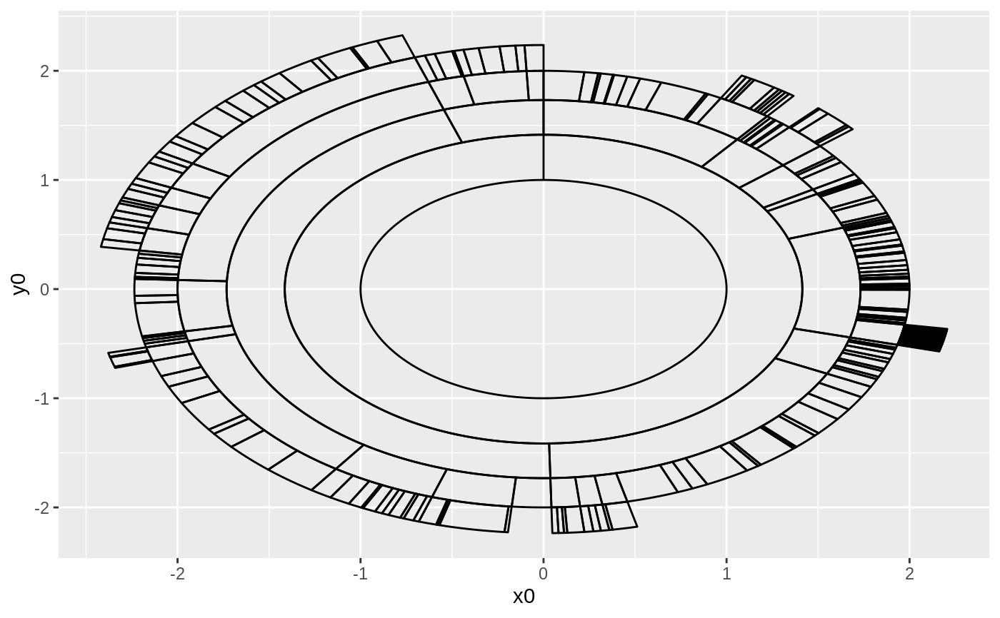

This geom is equivalent in functionality to ggforce::geom_arc_bar()
and allows for plotting of nodes as arcs with an inner and outer radius
scaled by the coordinate system. Its main use is currently in sunburst plots
as created with circular partition layouts
geom_node_arc_bar(mapping = NULL, data = NULL, position = "identity", show.legend = NA, ...)
| mapping | Set of aesthetic mappings created by |
|---|---|
| data | A data frame. If specified, overrides the default data frame defined at the top level of the plot. |
| position | Position adjustment, either as a string, or the result of a call to a position adjustment function. |
| show.legend | logical. Should this layer be included in the legends?
|
| ... | other arguments passed on to
|
geom_node_point understand the following aesthetics. Bold aesthetics are
automatically set, but can be overridden.
x0
y0
r0
r
start
end
alpha
colour
fill
shape
size
stroke
filter
Other geom_node_*: geom_node_circle,
geom_node_point,
geom_node_text,
geom_node_tile
require(tidygraph) gr <- tbl_graph(flare$vertices, flare$edges) ggraph(gr, 'partition', circular = TRUE, weight = size) + geom_node_arc_bar()